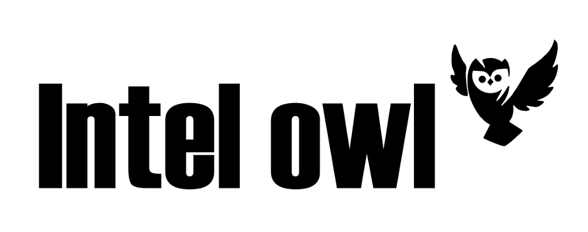
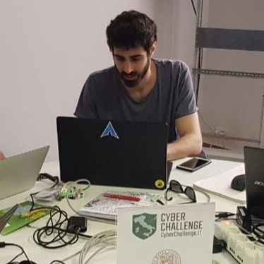

Intel Owl is an Open Source Intelligence, or OSINT solution to get threat intelligence data about a specific file, an IP or a domain from a single API at scale.
It integrates a number of analyzers available online and is for everyone who needs a single point to query for info about a specific file or observable.
And the best part? You can host it yourself locally with minimal effort.
Features

Provides enrichment of threat intel for malware as well as observables (IP, Domain, URL and hash).

This application is built to scale out and to speed up the retrieval of threat info.
- You can use Command-line Python client for batch-data and routine daily checks.
- Check out here for more details.
It can be integrated easily in your stack of security tools (pyintelowl) to automate common jobs usually performed, for instance, by SOC analysts manually.
- Darktheme included by default. Cheers
Intel Owl is composed of analyzers that can be run to retrieve data from external sources (like VirusTotal or AbuseIPDB) or to generate intel from internal analyzers (like Yara or Oletools)
- Along with Cool Light theme
Latest Updates
Happy First Birthday IntelOwl!
pyintelowl
Blog Posts
The Daily Swig
Intel Owl – OSINT tool automates the intel-gathering process using a single API
An open source intelligence (OSINT) tool that collates threat intel data from more than 80 sources is the latest security platform to emerge from the Honeynet Project... Read more
Testimonials
We love to work with the community to improve the project. This is what users and contributors say about IntelOwl.
As a Threat Intel Analyst, I use IntelOwl daily to expand the context of various indicators with ease by simply querying one platform instead of multiple. IntelOwl has made my workflow faster as I now have more time to concentrate on the analysis rather than collecting the data.
Kostas Tsialemis
Cyber Threat Intelligence Analyst
IntelOwl is a one-stop solution for all to get intelligence data during threat hunting. It is easy to use with well-designed UI/UX. And it is useful since many robust analyzers are integrated into this solution. As a threat researcher and an open source lover, I highly recommend IntelOwl!
KunYu Chen
Founder of Quark Engine
Would you like to be a testimonial for IntelOwl? Let us know!
You?
IntelOwl has the most welcoming community that I met in a opensource project, with weekly updates and real world use cases
Simone Berni
Threat Intelligence Engineer
I have been in development and also used IntelOwl, for some testing purposes. The dashboard is pretty amazing and self-explanatory. I loved the built-in dark theme. And command-line client is no smaller than that. I do think you'll be amazed by the look and feel of pyintelowl. Give both a try!
Appaji Chintimi
Security Enthusiast
Frequently Asked Questions
-
Is this only compatible on Linux?
IntelOwl is tested and supported to work in a Linux-based OS. It may also run on windows, but that is not officially supported yet. And Regarding client, i.e., Web-Interface or pyintelowl can be accessed anywhere regardless of Operating System.
-
I have found one API which can be included in
IntelOwl. What next?
Great! Head over to GitHub Issues and open a new one. Contribute to it if you wish, else just leave it there. Rest of things will be taken care of by us.
-
I have several techinal doubts regarding that can't
just be answered at Issues. Whom I should contact?
Join our Slack community where all our Development goes on.
-
I don't want to use docker deployment. Are there
any other ways, I could achieve this?
Yes! The discussion thread is open for this. Follow it for more Updates. We do have a proper tutorial to deploy IntelOwl on Google-Kubernetes-Engine here.
Contact Author and Maintainers
Feel free to contact the main developers at any time